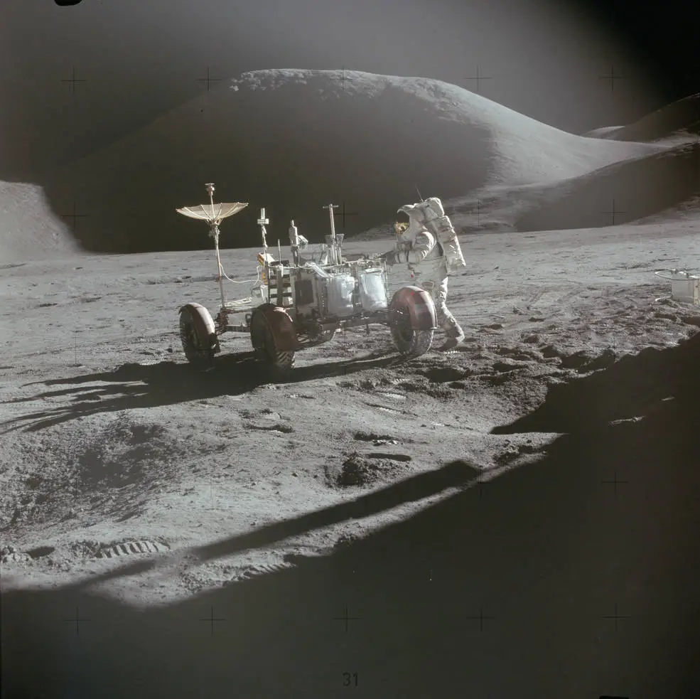
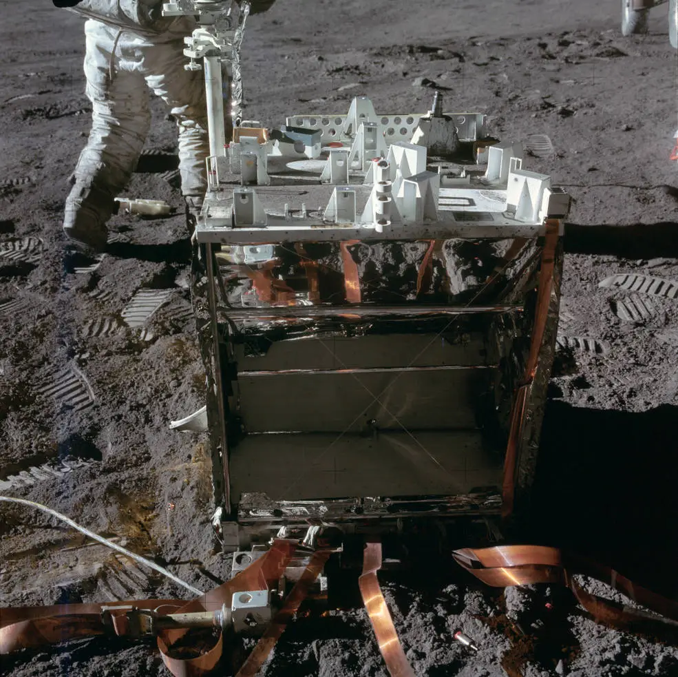

Apollo 15: Moon Buggy
Three trips, parked forever...

Hello! I’m the rover or ‘moon buggy’ in Apollo 15. I have 2 companions on my assignment. They are David and James, I drove them throughout the moon!
We discovered rocks, toured the moon, and I helped them collect geologic examples!
Let me tell you my story!
I don’t have a personal name,
but they usually call me ‘moon buggy’
or simply Land Roving Vehicle.
Even if I don’t have a name,
I have a very important mission!
To be the car of the astronauts to traverse the moon!


I did 3 trips on my mission.
On our first trip together with James and David, we headed south-southeast along Hadley Rille(I am the first and only rover to traverse this btw) towards the Elbow Crater.
We travelled for 3.2 kilometers…
thankfully I made it!
When we’re on the crater, David and James got down to collect geology samples(just rocks basically) while I waited for them.
After they collected rocks, we now moved on to the next destination.
Our next stop was Station 2 near St. George Crater on the slopes of Mount Hadley!
Then they got down to collect rocks again.
After they collected rocks, sadly because we’re running out of time we didn’t get to the next destination, Station 3.
So we just got back to the Lunar Module(where James and David stay).
But surprise! I actually still have another mission for the day. It’s transporting the instruments, they called it ALSEP instruments.
Then I watched David drill holes, and he’s clearly having a hard time. So we just drove back to their accommodation(Lunar Module obviously).
They parked me outside while they went inside to eat dinner. Well, the moon’s scenery is worth the watch.
The next day, it’s now our second Moon walk.
Another trip again!
I saw James and David going out, but they didn’t drive me.
Why, though?
Later, they went back and loaded me and we drove away.
Now I can say, this is my second trip!
We headed south, passed by Mt. Hadley, towards our destination… Station 6!
Then when we’re already 5 kilometers away from their accommodation(Lunar Module obviously).
David and James got down, and I saw David taking pictures of their accommodation from this distance, why though?
They see it everyday.
Just kidding! It’s because this is our longest trip!
Then they collected rocks again, now with soil.
After that, we headed west and we saw this greenish large rock at Station 6a. David got down to sample it of course.
Oops! I almost tilted!
Thankfully, James managed to steady me.
Next, we headed to Station 7 at Spur Crater.
Wow, a new place unlocked! I saw them collecting a white rock, actually it’s white inside.
Then, we left to go back to their accommodation(Lunar Module obviously), but we made a quick stop at Station 4 at Dune Crater.
They collected rocks again.
Then on the ride to their accommodation… wohooo!
I drove with a speed like never before!
Well just 12km/hr. Then when we got back, they unloaded all the things on my back.
Whew! What a trip.
Then I saw David and James go on and about, busy with their chores.
I saw James pulling out the American flag while David drills again(his unfinished work from yesterday).
Then after their chores, David drove me to deploy the American Flag while James walked.
After our tasks for the day, they went inside their accommodation, while I stayed outside.
Now, I chose to watch the Falcon, that’s the name of their accommodation. I will actually miss them.
It's the next day, and our last trip!
First, they loaded me with their equipment.
Then I saw them taking pictures of each other.
Humans really like to preserve memories.
Then David drove me while James walked again. Seriously, isn't he tired?
At our destination, they called it the ALSEP site.
They collected the rocks David drilled before.
After that, we drove to Station 9.
They took pictures again and collected rocks.
The same scenario with the next stop, the Station 9a.
Then to my last station, Station 10. They took pictures again.
Now it’s time to go back, but they collected rocks again along the way.
Then for my last drive, we drove 2.5 kilometers back to their accommodation.
Near their accommodation, they took pictures again.
Then I saw them talking to a monitor.
David dropped a feather and a hammer at the same time and they hit the ground at the same time too.
He looks proud and happy….
After that I saw David leaving some things.
Then for my last trip with him, he parked me 500 feet away from their accommodation.
1
2...
3...
I saw them going up.
Will they go back to Earth?
I can’t go back with them because they cannot really take me back…
Bye-bye!
1...
2..3
..4...5
..6..7
.8..9
……
51...
52..53..
54...
55
It’s been fifty-years since they left.
I’m wondering, how is David and James?
Did they get back safely?
Do they still remember me?
I still don’t have a name, but can you please remember me?
This is the last photograph of the Land Rover Vehicle of Apollo 15... Year 1971...55 years ago